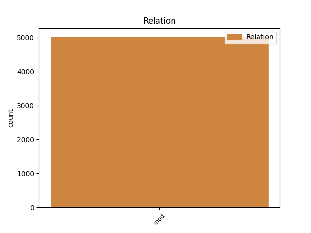
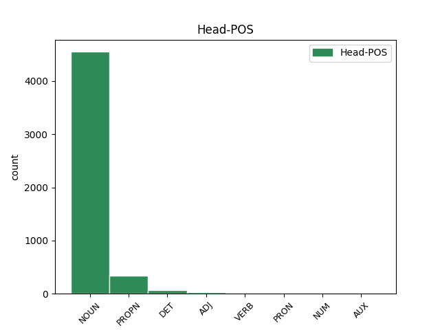
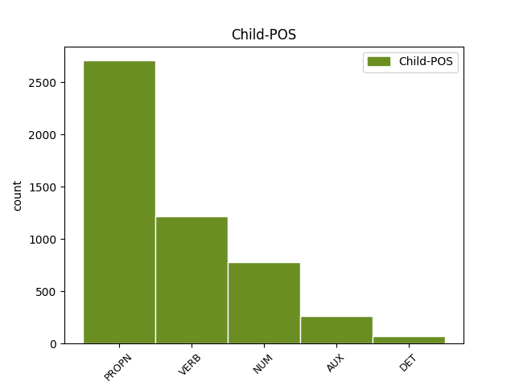

Distribution of features within this leaf



Agreement Rules sorted by frequency.
- When the dependent token is the modifer(mod) of the head token, and the dependent token is PROPN.
1 Kopalovy _ _ _ _ 0 _ _ _
2 výsledky _ _ _ _ 0 _ _ _
3 je _ _ _ _ 0 _ _ _
4 možné _ _ _ _ 0 _ _ _
5 aplikovat _ _ _ _ 0 _ _ _
6 na _ _ _ _ 0 _ _ _
7 těsné _ _ _ _ 0 _ _ _
8 dvojhvězdy _ _ _ _ 0 _ _ _
9 a _ _ _ _ 0 _ _ _
10 na _ _ _ _ 0 _ _ _
11 soustavu soustava NOUN NNFS4-----A---- Case=Acc|Gender=Fem|Number=Sing|Polarity=Pos 0 _ _ _
12 Země Země PROPN NNFS1-----A---- Case=Nom|Gender=Fem|NameType=Geo|Number=Sing|Polarity=Pos 11 mod _ SpaceAfter=No
13 , _ _ _ _ 0 _ _ _
14 Měsíc _ _ _ _ 0 _ _ _
15 . _ _ _ _ 0 _ _ _
1 Výklad _ _ _ _ 0 _ _ _
2 spekter _ _ _ _ 0 _ _ _
3 byl _ _ _ _ 0 _ _ _
4 vlastně _ _ _ _ 0 _ _ _
5 první _ _ _ _ 0 _ _ _
6 zkouškou _ _ _ _ 0 _ _ _
7 kvantově _ _ _ _ 0 _ _ _
8 modelu model NOUN NNIS2-----A---- Animacy=Inan|Case=Gen|Gender=Masc|Number=Sing|Polarity=Pos 0 _ _ _
9 , _ _ _ _ 0 _ _ _
10 který _ _ _ _ 0 _ _ _
11 v _ _ _ _ 0 _ _ _
12 mikrosvětě _ _ _ _ 0 _ _ _
13 atomu _ _ _ _ 0 _ _ _
14 nahradil nahradit VERB VpYS---XR-AA--- Aspect=Perf|Gender=Masc|Number=Sing|Polarity=Pos|Tense=Past|VerbForm=Part|Voice=Act 8 mod _ _
15 klasickou _ _ _ _ 0 _ _ _
16 mechaniku _ _ _ _ 0 _ _ _
17 . _ _ _ _ 0 _ _ _
1 Naproti _ _ _ _ 0 _ _ _
2 tomu _ _ _ _ 0 _ _ _
3 prvky _ _ _ _ 0 _ _ _
4 , _ _ _ _ 0 _ _ _
5 kterým _ _ _ _ 0 _ _ _
6 chybí _ _ _ _ 0 _ _ _
7 jeden jeden NUM ClYS1---------- Case=Nom|Gender=Masc|Number=Sing|NumForm=Word|NumType=Card|NumValue=1,2,3 9 mod _ LNumValue=1
8 obvodový _ _ _ _ 0 _ _ _
9 elektron elektron NOUN NNIS1-----A---- Animacy=Inan|Case=Nom|Gender=Masc|Number=Sing|Polarity=Pos 0 _ _ _
10 do _ _ _ _ 0 _ _ _
11 úplného _ _ _ _ 0 _ _ _
12 obsazení _ _ _ _ 0 _ _ _
13 krajní _ _ _ _ 0 _ _ _
14 slupky _ _ _ _ 0 _ _ _
15 a _ _ _ _ 0 _ _ _
16 tvoří _ _ _ _ 0 _ _ _
17 jednomocné _ _ _ _ 0 _ _ _
18 záporné _ _ _ _ 0 _ _ _
19 ionty _ _ _ _ 0 _ _ _
20 a _ _ _ _ 0 _ _ _
21 vznikající _ _ _ _ 0 _ _ _
22 připoutáním _ _ _ _ 0 _ _ _
23 dalšího _ _ _ _ 0 _ _ _
24 elektronu _ _ _ _ 0 _ _ _
25 . _ _ _ _ 0 _ _ _
1 Mezi _ _ _ _ 0 _ _ _
2 nejvýznamnější _ _ _ _ 0 _ _ _
3 patřily _ _ _ _ 0 _ _ _
4 výpočet výpočet NOUN NNIS1-----A---- Animacy=Inan|Case=Nom|Gender=Masc|Number=Sing|Polarity=Pos 0 _ _ _
5 tepelných _ _ _ _ 0 _ _ _
6 napjatostí _ _ _ _ 0 _ _ _
7 pro _ _ _ _ 0 _ _ _
8 stavbu _ _ _ _ 0 _ _ _
9 přehrady _ _ _ _ 0 _ _ _
10 Orlík _ _ _ _ 0 _ _ _
11 , _ _ _ _ 0 _ _ _
12 na _ _ _ _ 0 _ _ _
13 jehož _ _ _ _ 0 _ _ _
14 základě _ _ _ _ 0 _ _ _
15 byl být AUX VpYS---XR-AA--- Gender=Masc|Number=Sing|Polarity=Pos|Tense=Past|VerbForm=Part|Voice=Act 4 mod _ _
16 navržen _ _ _ _ 0 _ _ _
17 ekonomičtější _ _ _ _ 0 _ _ _
18 způsob _ _ _ _ 0 _ _ _
19 výstavby _ _ _ _ 0 _ _ _
20 , _ _ _ _ 0 _ _ _
21 ve _ _ _ _ 0 _ _ _
22 své _ _ _ _ 0 _ _ _
23 době _ _ _ _ 0 _ _ _
24 velmi _ _ _ _ 0 _ _ _
25 progresívní _ _ _ _ 0 _ _ _
26 , _ _ _ _ 0 _ _ _
27 výpočet _ _ _ _ 0 _ _ _
28 údajů _ _ _ _ 0 _ _ _
29 potřebných _ _ _ _ 0 _ _ _
30 k _ _ _ _ 0 _ _ _
31 posouzení _ _ _ _ 0 _ _ _
32 zbytkových _ _ _ _ 0 _ _ _
33 napětí _ _ _ _ 0 _ _ _
34 svařovaného _ _ _ _ 0 _ _ _
35 ocelového _ _ _ _ 0 _ _ _
36 pláště _ _ _ _ 0 _ _ _
37 jaderné _ _ _ _ 0 _ _ _
38 elektrárny _ _ _ _ 0 _ _ _
39 v _ _ _ _ 0 _ _ _
40 Jaslovských _ _ _ _ 0 _ _ _
41 Bohunicích _ _ _ _ 0 _ _ _
42 , _ _ _ _ 0 _ _ _
43 výpočet _ _ _ _ 0 _ _ _
44 mostových _ _ _ _ 0 _ _ _
45 desek _ _ _ _ 0 _ _ _
46 montovaných _ _ _ _ 0 _ _ _
47 z _ _ _ _ 0 _ _ _
48 nosníků _ _ _ _ 0 _ _ _
49 , _ _ _ _ 0 _ _ _
50 výpočty _ _ _ _ 0 _ _ _
51 montovaných _ _ _ _ 0 _ _ _
52 a _ _ _ _ 0 _ _ _
53 monolitických _ _ _ _ 0 _ _ _
54 vodojemů _ _ _ _ 0 _ _ _
55 v _ _ _ _ 0 _ _ _
56 podmínkách _ _ _ _ 0 _ _ _
57 působení _ _ _ _ 0 _ _ _
58 pružného _ _ _ _ 0 _ _ _
59 podloží _ _ _ _ 0 _ _ _
60 , _ _ _ _ 0 _ _ _
61 výpočty _ _ _ _ 0 _ _ _
62 související _ _ _ _ 0 _ _ _
63 s _ _ _ _ 0 _ _ _
64 otázkami _ _ _ _ 0 _ _ _
65 zakládání _ _ _ _ 0 _ _ _
66 velkých _ _ _ _ 0 _ _ _
67 staveb _ _ _ _ 0 _ _ _
68 na _ _ _ _ 0 _ _ _
69 šikmých _ _ _ _ 0 _ _ _
70 vrstvách _ _ _ _ 0 _ _ _
71 . _ _ _ _ 0 _ _ _
1 Jak _ _ _ _ 0 _ _ _
2 bylo _ _ _ _ 0 _ _ _
3 vědeckými _ _ _ _ 0 _ _ _
4 pokusy _ _ _ _ 0 _ _ _
5 zjištěno _ _ _ _ 0 _ _ _
6 , _ _ _ _ 0 _ _ _
7 a _ _ _ _ 0 _ _ _
8 to ten DET PDNS4---------- Case=Acc|Gender=Neut|Number=Sing|PronType=Dem 12 mod _ _
9 již _ _ _ _ 0 _ _ _
10 v _ _ _ _ 0 _ _ _
11 minulém _ _ _ _ 0 _ _ _
12 století století NOUN NNNS6-----A---- Case=Loc|Gender=Neut|Number=Sing|Polarity=Pos 0 _ _ _
13 , _ _ _ _ 0 _ _ _
14 rozpoznává _ _ _ _ 0 _ _ _
15 hmyz _ _ _ _ 0 _ _ _
16 květy _ _ _ _ 0 _ _ _
17 podle _ _ _ _ 0 _ _ _
18 barev _ _ _ _ 0 _ _ _
19 . _ _ _ _ 0 _ _ _
Disagree Examples:
1 Redakce _ _ _ _ 0 _ _ _
2 Haló _ _ _ _ 0 _ _ _
3 soboty _ _ _ _ 0 _ _ _
4 ve _ _ _ _ 0 _ _ _
5 snaze _ _ _ _ 0 _ _ _
6 pomoci _ _ _ _ 0 _ _ _
7 zejména _ _ _ _ 0 _ _ _
8 řidičům _ _ _ _ 0 _ _ _
9 ovládajícím _ _ _ _ 0 _ _ _
10 stará _ _ _ _ 0 _ _ _
11 pravidla _ _ _ _ 0 _ _ _
12 silničního _ _ _ _ 0 _ _ _
13 provozu _ _ _ _ 0 _ _ _
14 k _ _ _ _ 0 _ _ _
15 rychlé _ _ _ _ 0 _ _ _
16 orientaci _ _ _ _ 0 _ _ _
17 ve _ _ _ _ 0 _ _ _
18 vyhlášce _ _ _ _ 0 _ _ _
19 uvádí _ _ _ _ 0 _ _ _
20 v _ _ _ _ 0 _ _ _
21 odstavcích _ _ _ _ 0 _ _ _
22 jednotlivých _ _ _ _ 0 _ _ _
23 paragrafů _ _ _ _ 0 _ _ _
24 změny _ _ _ _ 0 _ _ _
25 nebo _ _ _ _ 0 _ _ _
26 důvody _ _ _ _ 0 _ _ _
27 změn změna NOUN NNFP2-----A---- Case=Gen|Gender=Fem|Number=Plur|Polarity=Pos 0 _ _ _
28 , _ _ _ _ 0 _ _ _
29 které _ _ _ _ 0 _ _ _
30 nastaly nastat VERB VpTP---XR-AA--- Animacy=Inan|Gender=Fem,Masc|Number=Plur|Polarity=Pos|Tense=Past|VerbForm=Part|Voice=Act 27 mod _ SpaceAfter=No
31 . _ _ _ _ 0 _ _ _
1 Pod _ _ _ _ 0 _ _ _
2 * _ _ _ _ 0 _ _ _
3 # _ _ _ _ 0 _ _ _
4 je _ _ _ _ 0 _ _ _
5 zařazeno _ _ _ _ 0 _ _ _
6 ustanovení _ _ _ _ 0 _ _ _
7 dřívějšího _ _ _ _ 0 _ _ _
8 * _ _ _ _ 0 _ _ _
9 # _ _ _ _ 0 _ _ _
10 vyhlášky vyhláška NOUN NNFS2-----A---- Case=Gen|Gender=Fem|Number=Sing|Polarity=Pos 0 _ _ _
11 # _ _ _ _ 0 _ _ _
12 MV MV PROPN NNNXX-----A---8 Abbr=Yes|Gender=Neut|NameType=Com|Polarity=Pos 10 mod _ LGloss=(ministerstvo_vnitra)|LId=MV-2|SpaceAfter=No
13 . _ _ _ _ 0 _ _ _
1 Podmínky _ _ _ _ 0 _ _ _
2 pro _ _ _ _ 0 _ _ _
3 vybavení _ _ _ _ 0 _ _ _
4 motorových _ _ _ _ 0 _ _ _
5 vozidel _ _ _ _ 0 _ _ _
6 bezpečnostními _ _ _ _ 0 _ _ _
7 pásy _ _ _ _ 0 _ _ _
8 a _ _ _ _ 0 _ _ _
9 kotevními _ _ _ _ 0 _ _ _
10 úchyty _ _ _ _ 0 _ _ _
11 stanoví _ _ _ _ 0 _ _ _
12 vyhlášky vyhláška NOUN NNFS2-----A---- Case=Gen|Gender=Fem|Number=Sing|Polarity=Pos 0 _ _ _
13 FMD FMD PROPN NNNXX-----A---8 Abbr=Yes|Gender=Neut|NameType=Com|Polarity=Pos 12 mod _ SpaceAfter=No
14 . _ _ _ _ 0 _ _ _
1 Pokud _ _ _ _ 0 _ _ _
2 je _ _ _ _ 0 _ _ _
3 provozovateli _ _ _ _ 0 _ _ _
4 známo _ _ _ _ 0 _ _ _
5 , _ _ _ _ 0 _ _ _
6 že _ _ _ _ 0 _ _ _
7 během _ _ _ _ 0 _ _ _
8 jízdy _ _ _ _ 0 _ _ _
9 nebude _ _ _ _ 0 _ _ _
10 moci _ _ _ _ 0 _ _ _
11 vozidlo _ _ _ _ 0 _ _ _
12 ovládat _ _ _ _ 0 _ _ _
13 jen _ _ _ _ 0 _ _ _
14 řidič _ _ _ _ 0 _ _ _
15 a _ _ _ _ 0 _ _ _
16 že _ _ _ _ 0 _ _ _
17 to ten DET PDNS4---------- Case=Acc|Gender=Neut|Number=Sing|PronType=Dem 20 mod _ _
18 bude _ _ _ _ 0 _ _ _
19 vyžadovat _ _ _ _ 0 _ _ _
20 bezpečnost bezpečnost NOUN NNFS4-----A---- Case=Acc|Gender=Fem|Number=Sing|Polarity=Pos 0 _ _ _
21 silničního _ _ _ _ 0 _ _ _
22 provozu _ _ _ _ 0 _ _ _
23 , _ _ _ _ 0 _ _ _
24 je _ _ _ _ 0 _ _ _
25 povinen _ _ _ _ 0 _ _ _
26 zajistit _ _ _ _ 0 _ _ _
27 , _ _ _ _ 0 _ _ _
28 aby _ _ _ _ 0 _ _ _
29 by _ _ _ _ 0 _ _ _
30 k _ _ _ _ 0 _ _ _
31 jízdě _ _ _ _ 0 _ _ _
32 byl _ _ _ _ 0 _ _ _
33 přibrán _ _ _ _ 0 _ _ _
34 potřebný _ _ _ _ 0 _ _ _
35 počet _ _ _ _ 0 _ _ _
36 způsobilých _ _ _ _ 0 _ _ _
37 a _ _ _ _ 0 _ _ _
38 náležitě _ _ _ _ 0 _ _ _
39 poučených _ _ _ _ 0 _ _ _
40 osob _ _ _ _ 0 _ _ _
41 . _ _ _ _ 0 _ _ _
1 Základní _ _ _ _ 0 _ _ _
2 barva _ _ _ _ 0 _ _ _
3 vozidla _ _ _ _ 0 _ _ _
4 chromová _ _ _ _ 0 _ _ _
5 žluť _ _ _ _ 0 _ _ _
6 tmavá _ _ _ _ 0 _ _ _
7 odstínu _ _ _ _ 0 _ _ _
8 * _ _ _ _ 0 _ _ _
9 , _ _ _ _ 0 _ _ _
10 přední _ _ _ _ 0 _ _ _
11 a _ _ _ _ 0 _ _ _
12 zadní _ _ _ _ 0 _ _ _
13 dveře _ _ _ _ 0 _ _ _
14 , _ _ _ _ 0 _ _ _
15 přední _ _ _ _ 0 _ _ _
16 a _ _ _ _ 0 _ _ _
17 zadní _ _ _ _ 0 _ _ _
18 kapota _ _ _ _ 0 _ _ _
19 a _ _ _ _ 0 _ _ _
20 čtverec _ _ _ _ 0 _ _ _
21 na _ _ _ _ 0 _ _ _
22 střeše _ _ _ _ 0 _ _ _
23 vozidla _ _ _ _ 0 _ _ _
24 bílá _ _ _ _ 0 _ _ _
25 odstínu _ _ _ _ 0 _ _ _
26 * _ _ _ _ 0 _ _ _
27 , _ _ _ _ 0 _ _ _
28 nápis nápis NOUN NNIS1-----A---- Animacy=Inan|Case=Nom|Gender=Masc|Number=Sing|Polarity=Pos 0 _ _ _
29 VB VB PROPN NNFXX-----A---8 Abbr=Yes|Gender=Fem|NameType=Com|Polarity=Pos 28 mod _ _
30 a _ _ _ _ 0 _ _ _
31 číslo _ _ _ _ 0 _ _ _
32 vozidla _ _ _ _ 0 _ _ _
33 na _ _ _ _ 0 _ _ _
34 jeho _ _ _ _ 0 _ _ _
35 střeše _ _ _ _ 0 _ _ _
36 černá _ _ _ _ 0 _ _ _
37 odstínu _ _ _ _ 0 _ _ _
38 * _ _ _ _ 0 _ _ _
39 . _ _ _ _ 0 _ _ _